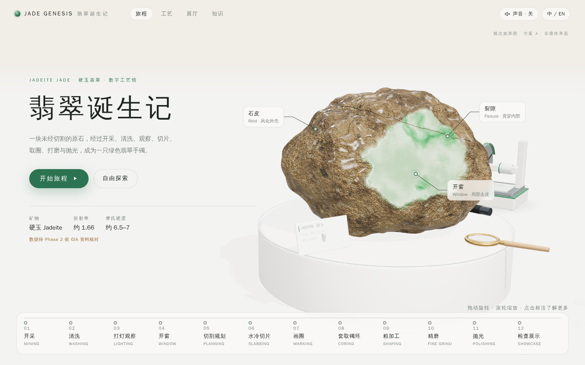
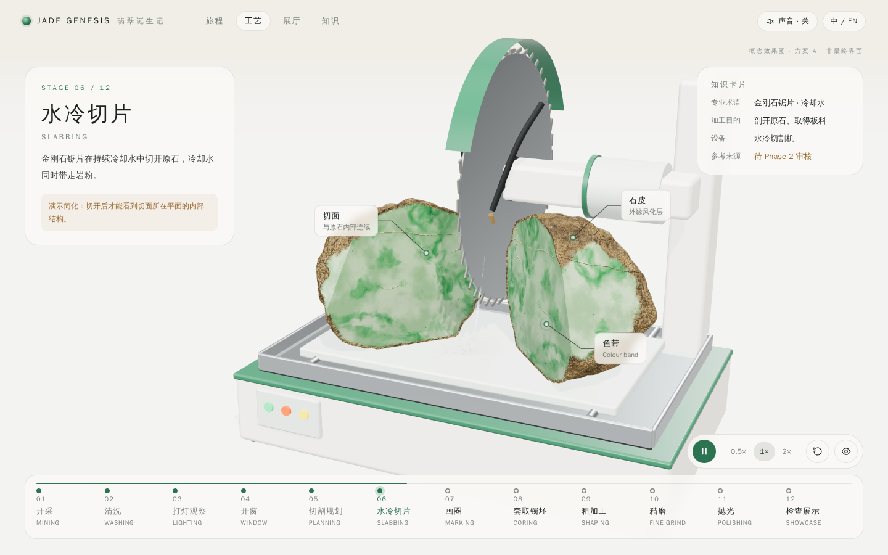
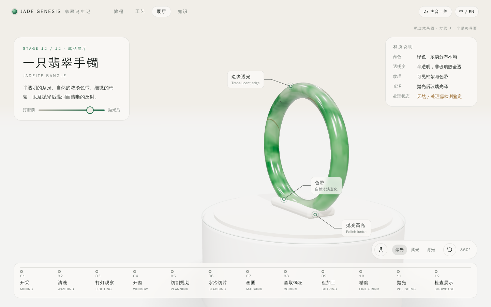
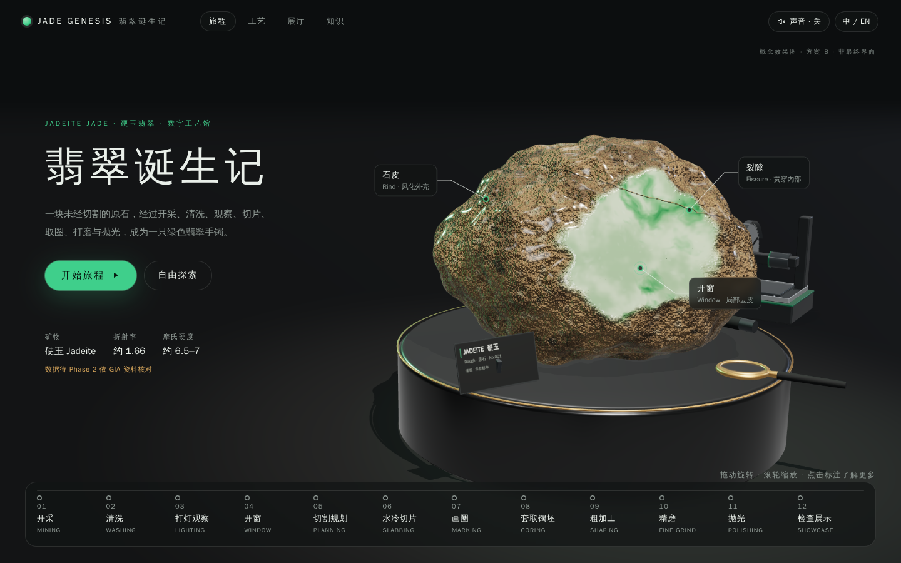
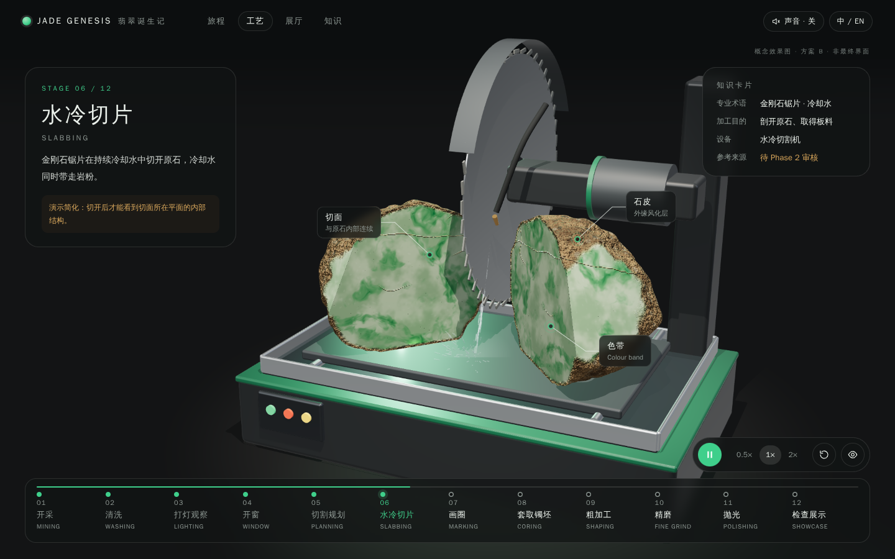
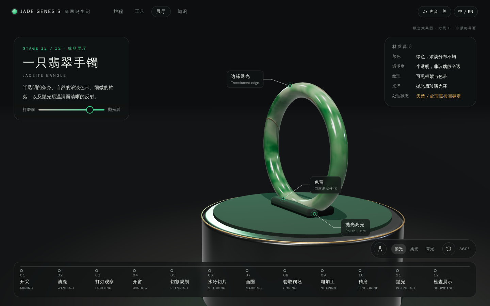

暖白展厅、漂浮展台、收藏级微缩机械。轻盈、清晰，翡翠绿是画面中唯一的饱和色，工艺细节一目了然。



黑曜石展馆、聚光灯与翡翠色轮廓光。神秘、昂贵、珠宝级；但暗场会吞掉机械与工艺细节。



| 工艺可读性 | A 更好：浅背景下机械结构、水流、切面边界都清晰。B 需要额外补光，阴影区信息会丢失。 |
|---|---|
| 翡翠质感 | B 的成品镜头更有“珠宝感”，边缘透光更戏剧化；A 更接近自然光下的真实观感，不易夸大颜色。 |
| 知识阅读 | A 的浅色卡片长文阅读更舒适；B 需注意小字号对比度。 |
| 性能风险 | 两者相近。B 依赖聚光灯阴影与高光，移动端降级后落差更明显。 |
| 可选混合 | 全程用 A；仅在第 12 幕“成品展厅”切换到 B 的暗场聚光（展厅内的“暗房”），作为高潮。 |